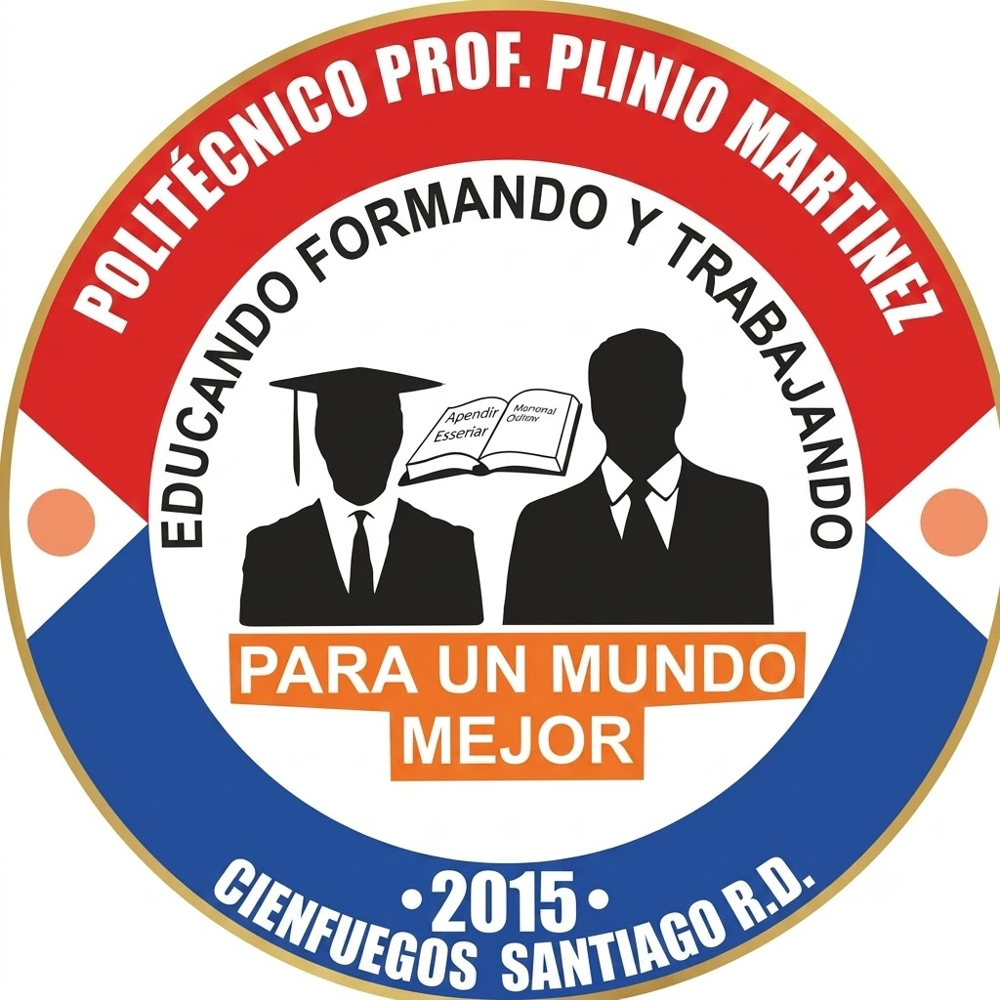

Politécnico Prof. Plinio MartínezEducando, formando y trabajandoInformación institucional y ubicación del centro.
Director: Eduardo Alcántara
Dirección: Calle 53A, Barrio Alegría, Cienfuegos, Santiago de los Caballeros, República Dominicana.
Teléfono y WhatsApp: (849) 997-5995
Correo: registroplinio13@gmail.com
Instagram: @pol.pliniomartinez
Facebook: Pol. Plinio Martínez